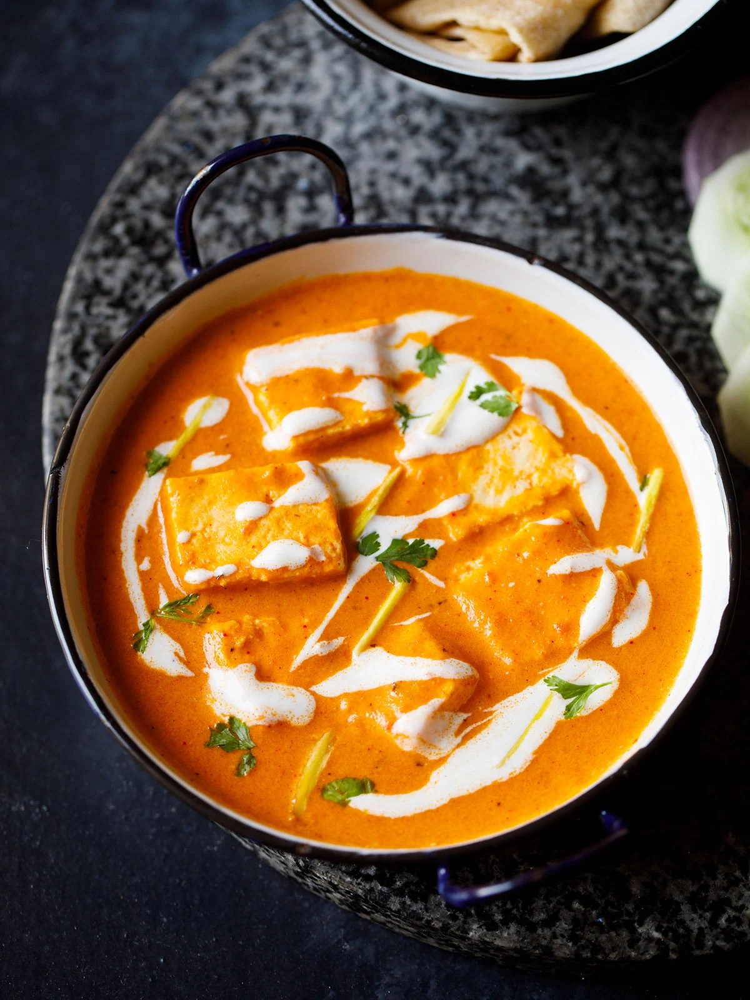

PANNER BUTTER MASALA

Home
DESCRIPTION
Paneer Butter Masala is a popular North Indian curry made with soft paneer cubes in a smooth tomato-based gravy. The sauce is prepared with butter, cashews, cream and a few mild spices. It has a balanced flavor that is lightly sweet and not too spicy. This creamy paneer gravy tastes good with naan, roti, or jeera rice.This curry has a delicious makhani gravy made with tomatoes, cashews, butter and cream. The tomatoes add a gentle tang, the cashews make the gravy smooth, and the butter and cream add richness. Unlike the gravies of Paneer Tikka Masala or Kadai Paneer, Paneer Butter Masala is milder and lets the flavors of the makhani gravy stand out. The paneer absorbs the sauce beautifully, making every bite flavorful.
INGREDIENTS
- Tomatoes
- Cashews
- Cream:
- Butter
- Paneer
- Spices & Herbs
How to Make Paneer Butter Masala
- Preparation - Soak 18 to 20 cashews in ⅓ cup hot water for 15 to 20 minutes.
- While the cashews are soaking, you can prep the other ingredients. It’s time for chopping tomatoes, chopping and preparing the ginger-garlic paste, and slicing paneer into cubes.
- To make the ginger garlic paste, crush a 1 inch piece of peeled ginger with 3 to 4 small to medium-sized garlic cloves in a mortar & pestle. Continue crushing until it is a semi-fine or fine paste. Keep aside.
- After 15 to 20 minutes, drain the water and add the soaked cashews to a blender or mixer-grinder.Also, add 2 to 3 tablespoons fresh water (or as much as is required to blend to a fine paste).
- Blend to a smooth paste without any tiny bits or chunks of cashews. Remove the cashew paste from the blender and set it aside.
- In the same blender, add 2 cups of diced or roughly chopped tomatoes.
- Blend to a smooth tomato puree. Set aside.
- Heat a thick bottomed pan or a heavy pan. Keep the heat to a low or medium-low. Add 2 tablespoons (or 3 to 4 tablespoons for a richer version) butter in a pan. Either salted or unsalted butter can be used.
- Keep the the heat to a low. Add 1 medium-sized tej patta and fry for 2 to 3 seconds, or until fragrant.
- Add the prepared crushed ginger-garlic or 1 teaspoon ready-made ginger-garlic paste.crushed ginger-garlic paste added to pan
- Sauté until the raw aroma of the ginger-garlic disappears, about 10 to 12 seconds.frying ginger-garlic paste
- Pour in the prepared tomato purée.
- Mix it very well with the butter. Begin to cook the tomato purée on a low to medium-low or medium heat. Stir at intervals.
- The tomato purée mixture will start simmering.
- If the tomato purée splutters too much while cooking, then cover the pan partly with a lid or cover fully with a splatter guard (channi lid).
- Continue stirring occasionally. Simmer the purée for 5 to 6 minutes.
- Add 1 teaspoon Kashmiri red chili powder or deghi mirch.
- You can also opt to add just ½ teaspoon Kashmiri red chili powder, or ¼ – ½ teaspoon of cayenne, paprika or any other variety of red chilli powder that you prefer.
- Mix well and continue to stir and sauté the tomato purée.
- Sauté till the butter starts leaving the sides of the pan and the entire tomato purée mixture comes together as more of a thick and glossy paste.
- Now add the prepared cashew paste.cashew paste added
- Mix the cashew paste very well with the cooked tomato puree and continue to stir and sauté on a low to medium-low heat.
- After adding cashew paste, be sure to continuously stir the gravy.
- Sauté until the cashew paste is cooked and the butter begins to leave the sides of the masala. The masala paste will also look glossy.
- The cashew will cook quickly, just around 3 to 4 minutes on a low heat. And don’t forget to keep on stirring non-stop!sautéing the entire mixture
- >Next add 1½ cups water.
- Mix the water very well with the tomato-cashew masala. If there are lumps, then break them with a spoon or use a wired whisk for mixing.
- Let the curry simmer and come to a boil on a low to medium-low heat. Stir occasionally.
- After 2 to 3 mins, add ginger julienne (about 1-inch ginger – cut in thin, matchstick-like strips). Reserve a few for garnishing. The curry will begin to thicken.
- After 3 to 4 minutes, add 1 or 2 slit green chiles.slit green chillies added to gravy
- Also add salt to taste and, if necessary, ¼ to 1 teaspoon sugar depending on the sourness of the tomatoes.
- Mix very well and simmer for a minute.
- After the gravy thickens to your desired consistency, then add the paneer cubes (200 or 250 grams).
- Stir and mix the paneer cubes gently in the gravy. You can switch off the heat at this point.
- Now quickly add 1 teaspoon crushed dry fenugreek leaves (kasuri methi leaves) and 1 teaspoon garam masala to the gravy.
- Next add 2 to 3 tablespoons of low-fat or light cream or 1 to 2 tablespoons of heavy cream or whipping cream added
- Stir gently but well. If you haven’t yet, switch off the heat. cream mixed evenly and paneer butter masala ready to be served
- Serve Paneer Butter Masala hot garnished with 1 to 2 tablespoons of chopped coriander leaves (cilantro) and the remaining ginger julienne. You can also drizzle some cream or dot with butter while serving. Enjoy!